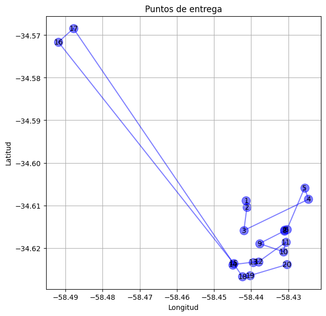
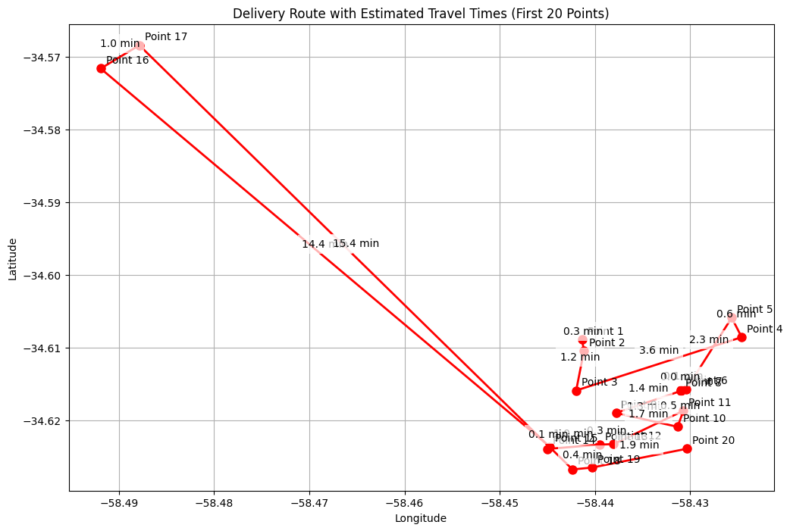

En este trabajo se analiza la logística de entregas de la empresa Iflow en la ciudad de Buenos Aires, utilizando técnicas de coloración de grafos para identificar rutas potenciales de repartidores. A partir de datos geográficos y temporales de las entregas realizadas entre mayo y agosto de 2024 para dos clientes específicos, se busca optimizar y visualizar las rutas de entrega mediante algoritmos de teoría de grafos y representación gráfica mejorada.
Introducción
La logística de distribución es un factor crítico en la eficiencia operacional de empresas de entrega. Con el crecimiento de las ciudades y la demanda de entregas rápidas, es esencial optimizar las rutas de los repartidores para minimizar tiempos y costos. Este estudio se enfoca en las entregas realizadas por Iflow, una empresa de logística, a supermercados en Buenos Aires, utilizando datos reales de entregas diarias de dos clientes (identificados como cliente 20 y 70) durante un período de cuatro meses en 2024.
El objetivo principal es aplicar técnicas de coloración de grafos para identificar y visualizar posibles rutas de repartidores, aprovechando información geográfica y temporal. Esto permitirá proponer mejoras en la asignación de rutas y recursos, contribuyendo a una logística más eficiente.
# Scientific and Mathematical Librariesimport numpy as npimport pandas as pdimport datetime as dtfrom scipy.spatial.distance import pdist, squareform# Visualization Librariesimport matplotlib.pyplot as pltimport matplotlib.colors as mcolorsfrom matplotlib.lines import Line2Dimport plotly.express as px# Network Analysisimport networkx as nx# Utility Librariesfrom itertools import combinations# Carga de datos df = pd.read_csv('../data/clean_iflow_data.csv')# Formateamos correctamente los datosdf['fecha'] = pd.to_datetime(df['fin_visita'], format='%Y-%m-%d %H:%M:%S', errors='coerce').dt.date# Muestra de los datosdf.head()
Unnamed: 0
id_orden
cliente
localidad
direccion
latitud
longitud
bultos
unidades
peso
...
inicio_visita
fin_visita
dia
mes
hora
diferencia_minutos
dia_str
duracion_visita_min
duracion_visita_horas
fecha
0
1
74956
70
CAPITAL
VIDAL 2044
-34.564779
-58.459956
2.516667
30
24.910
...
2024-05-23 14:13:53
2024-05-23 14:14:53
23.0
5.0
14.0
308.883333
jueves
1.000000
0.016667
2024-05-23
1
2
74956
70
CAPITAL
VIDAL 2044
-34.564779
-58.459956
2.866667
38
26.260
...
2024-05-10 16:43:00
2024-05-10 16:43:00
10.0
5.0
16.0
458.000000
viernes
0.000000
0.000000
2024-05-10
2
3
74956
70
CAPITAL
VIDAL 2044
-34.564779
-58.459956
2.400000
32
24.888
...
2024-05-30 09:41:36
2024-05-30 09:50:08
30.0
5.0
9.0
47.133333
jueves
8.533333
0.142222
2024-05-30
3
4
74956
70
CAPITAL
VIDAL 2044
-34.564779
-58.459956
1.800000
28
14.040
...
2024-06-13 13:32:55
2024-06-13 13:39:55
13.0
6.0
13.0
265.916667
jueves
7.000000
0.116667
2024-06-13
4
5
74956
70
CAPITAL
VIDAL 2044
-34.564779
-58.459956
2.116667
31
14.377
...
2024-06-27 15:36:00
2024-06-27 15:36:00
27.0
6.0
15.0
369.000000
jueves
0.000000
0.000000
2024-06-27
5 rows × 23 columns
Para simplificar el análisis nos limitamos al estudio de los datos del día 26-05-2024. Despues de filtrar la fecha seleccionamos las siguientes variables de interes:
cliente: Toma los valores “20” o “70” e indica de cual cliente fue entregada la mercadería.
fin_visita: Indica la fecha y hora al momento de finalizar la entrega.
Cordenadas: Columnas latitud y longitud.
# Selección de la fecha objetivodf_selected_date = df[df['fecha'] == dt.date(2024, 5, 23)]# Seleccionamos unicamente las variables de interesdf_geo = df_selected_date[['cliente', 'latitud', 'longitud', 'fin_visita']].sort_values(by='fin_visita').reset_index()# Creamos una nueva variable "order" que indica el nro de entrega en orden cronológico. df_geo['order'] = np.arange(1, len(df_geo) +1)df_geo.head()
index
cliente
latitud
longitud
fin_visita
order
0
4295
20
-34.608881
-58.441359
2024-05-23 07:15:04
1
1
3913
20
-34.610435
-58.441149
2024-05-23 07:30:08
2
2
14716
20
-34.615888
-58.441969
2024-05-23 07:42:30
3
3
22240
20
-34.608559
-58.424585
2024-05-23 08:05:20
4
4
17964
20
-34.605884
-58.425633
2024-05-23 08:13:31
5
Teoría
plt.figure(figsize=(7, 7))for i, row in df_geo.head(20).iterrows(): plt.scatter(row['longitud'], row['latitud'], s=140, c='blue', marker='o', alpha=0.5) plt.text(row['longitud'], row['latitud'], str(row['order']), ha='center', va='center')plt.xlabel('Longitud')plt.ylabel('Latitud')plt.title('Puntos de entrega')plt.grid(True)for i inrange(len(df_geo.head(20)) -1): plt.plot([df_geo.head(20).iloc[i]['longitud'], df_geo.head(20).iloc[i+1]['longitud']], [df_geo.head(20).iloc[i]['latitud'], df_geo.head(20).iloc[i+1]['latitud']], color='blue', alpha=0.5)plt.savefig('../images/grafico1.png')plt.show()

def estimate_time_distance(lat1, lon1, lat2, lon2, avg_speed_kmh=30):# Convert latitude/longitude to radians lat1, lon1 = np.radians(lat1), np.radians(lon1) lat2, lon2 = np.radians(lat2), np.radians(lon2)# Haversine formula dlat = lat2 - lat1 dlon = lon2 - lon1 a = np.sin(dlat/2)**2+ np.cos(lat1) * np.cos(lat2) * np.sin(dlon/2)**2 c =2* np.arcsin(np.sqrt(a))# Earth's radius in kilometers r =6371# Calculate distance in kilometers distance = c * r# Calculate time in minutes time_hours = distance / avg_speed_kmh time_minutes = time_hours *60return time_minutes
# Create a new figure with specified sizeplt.figure(figsize=(12, 8))# Plot points and linesplt.plot(df_geo['longitud'].head(20), df_geo['latitud'].head(20), 'ro-', markersize=8, linewidth=2)# Add point labelsfor i, row in df_geo.head(20).iterrows(): plt.annotate(f'Point {i+1}', (row['longitud'], row['latitud']), xytext=(5, 5), textcoords='offset points')# Add time estimates between consecutive pointsif i <len(df_geo.head(20))-1: next_row = df_geo.iloc[i+1] time = estimate_time_distance(row['latitud'], row['longitud'], next_row['latitud'], next_row['longitud'])# Calculate midpoint for time label mid_lon = (row['longitud'] + next_row['longitud']) /2 mid_lat = (row['latitud'] + next_row['latitud']) /2# Add time label plt.annotate(f'{time:.1f} min', (mid_lon, mid_lat), xytext=(0, 10), textcoords='offset points', ha='center', bbox=dict(facecolor='white', edgecolor='none', alpha=0.7))plt.title('Delivery Route with Estimated Travel Times (First 20 Points)')plt.xlabel('Longitude')plt.ylabel('Latitude')plt.grid(True)plt.show()

# Create a new figure with specified sizeplt.figure(figsize=(12, 8))# Plot points and linesplt.plot(df_geo['longitud'].head(20), df_geo['latitud'].head(20), 'bo-', markersize=8, linewidth=2)# Add point labels and actual travel timesfor i, row in df_geo.head(20).iterrows(): plt.annotate(f'Point {i+1}', (row['longitud'], row['latitud']), xytext=(5, 5), textcoords='offset points')# Add actual time differences between consecutive pointsif i <len(df_geo.head(20))-1: next_row = df_geo.iloc[i+1]# Calculate time difference in minutes between fin_visita timestamps time_diff = (pd.to_datetime(next_row['fin_visita']) - pd.to_datetime(row['fin_visita'])).total_seconds() /60# Calculate midpoint for time label mid_lon = (row['longitud'] + next_row['longitud']) /2 mid_lat = (row['latitud'] + next_row['latitud']) /2# Add time label plt.annotate(f'{time_diff:.1f} min', (mid_lon, mid_lat), xytext=(0, 10), textcoords='offset points', ha='center', bbox=dict(facecolor='white', edgecolor='none', alpha=0.7))plt.title('Delivery Route with Actual Travel Times (First 20 Points)')plt.xlabel('Longitude')plt.ylabel('Latitude')plt.grid(True)plt.show()
# Create a new figure with specified sizeplt.figure(figsize=(12, 8))# Create a color map for clients 20 and 70colors = ['red'if cliente ==20else'blue'if cliente ==70else'gray'for cliente in df_geo['cliente'].head(20)]# Create a scatter plot with points colored by clientescatter = plt.scatter(df_geo['longitud'].head(20), df_geo['latitud'].head(20), c=colors, s=100) # Size of pointslegend_elements = [Line2D([0], [0], marker='o', color='w', markerfacecolor='red', label='Cliente 20', markersize=10), Line2D([0], [0], marker='o', color='w', markerfacecolor='blue', label='Cliente 70', markersize=10)]plt.legend(handles=legend_elements)plt.title('Delivery Points for Clients 20 and 70 (First 20 Points)')plt.xlabel('Longitude')plt.ylabel('Latitude')plt.grid(True)plt.show()
df_muestra = df_geo.head(40)
def assign_deliveries_to_drivers(df_muestra, velocidad_promedio=30.0, tiempo_minimo_separacion=5, factor_desvio=0.5):""" Asigna entregas a repartidores usando coloreo de grafos. Args: df_muestra: DataFrame con las entregas a procesar velocidad_promedio: Velocidad promedio de los repartidores en km/h tiempo_minimo_separacion: Tiempo mínimo entre entregas en minutos factor_desvio: Factor de desvío permitido entre tiempo estimado y real Returns: dict: Diccionario con las asignaciones {id_repartidor: [lista_de_entregas]} """# Diccionario que almacenará las asignaciones finales de entregas a repartidores asignaciones_repartidores = {}# Procesar las entregas agrupadas por clientefor cliente, grupo in df_muestra.groupby('cliente'):# Resetear índices para facilitar el procesamiento entregas = grupo.reset_index(drop=True) n =len(entregas)# Crear un grafo vacío para modelar conflictos entre entregas G = nx.Graph()# Añadir un nodo por cada entrega del clientefor idx in entregas.index: G.add_node(idx)# Analizar pares de entregas para detectar conflictosfor i, j in combinations(entregas.index, 2): d1 = entregas.loc[i] # Primera entrega del par d2 = entregas.loc[j] # Segunda entrega del par# Asegurar que los tiempos de entrega estén en formato datetime d1_fin = pd.to_datetime(d1['fin_visita']) ifisinstance(d1['fin_visita'], str) else d1['fin_visita'] d2_fin = pd.to_datetime(d2['fin_visita']) ifisinstance(d2['fin_visita'], str) else d2['fin_visita']# Calcular la diferencia temporal entre entregas diferencia_tiempo_min =abs((d2_fin - d1_fin).total_seconds()) /60.0 diferencia_tiempo_horas = diferencia_tiempo_min /60.0# Calcular la distancia física entre los puntos de entrega distancia = estimate_time_distance(d1['longitud'], d1['latitud'], d2['longitud'], d2['latitud'])# Calcular el tiempo mínimo necesario para viajar entre puntos tiempo_viaje = distancia / velocidad_promedio# Determinar si existe un conflicto entre las entregasif diferencia_tiempo_min <= tiempo_minimo_separacion:# Entregas muy cercanas en tiempo: asignar al mismo repartidorpasselif diferencia_tiempo_horas < tiempo_viaje * factor_desvio:# El tiempo real es mucho menor al tiempo estimado necesario# Añadir una arista al grafo indicando que no pueden ser realizadas por el mismo repartidor G.add_edge(i, j)# Aplicar algoritmo de coloreo de grafos para asignar repartidores# Cada color representa un repartidor diferente coloreo = nx.coloring.greedy_color(G, strategy='largest_first')# Distribuir las entregas entre los repartidores según el coloreofor idx, color in coloreo.items(): id_repartidor =f'{cliente}_{color}'if id_repartidor notin asignaciones_repartidores: asignaciones_repartidores[id_repartidor] = [] asignaciones_repartidores[id_repartidor].append(entregas.loc[idx])return asignaciones_repartidores# Ejecutar la asignaciónasignaciones = assign_deliveries_to_drivers(df_muestra)# Visualizar las asignaciones en un mapacolores =list(mcolors.TABLEAU_COLORS.keys())plt.figure(figsize=(10, 8))# Graficar las entregas de cada repartidor con un color distintofor idx, (repartidor, entregas_repartidor) inenumerate(asignaciones.items()): entregas_df = pd.DataFrame(entregas_repartidor) latitudes = entregas_df['latitud'] longitudes = entregas_df['longitud'] color = colores[idx %len(colores)] plt.scatter(longitudes, latitudes, c=color, label=repartidor)# Configurar detalles del gráficoplt.xlabel('Longitud')plt.ylabel('Latitud')plt.title('Asignación de Entregas a Repartidores')plt.legend()plt.grid(True)plt.show()
# Crear una figura con subplots verticalesnum_repartidores =len(asignaciones)fig, axs = plt.subplots(num_repartidores, 1, figsize=(15, 10*num_repartidores))# Graficar las entregas de cada repartidor en su propio subplotfor idx, (repartidor, entregas_repartidor) inenumerate(asignaciones.items()): entregas_df = pd.DataFrame(entregas_repartidor)# Ordenar entregas cronológicamente entregas_df = entregas_df.sort_values('fin_visita')# Obtener coordenadas latitudes = entregas_df['latitud'] longitudes = entregas_df['longitud'] fin_visitas = entregas_df['fin_visita']# Graficar puntos y líneas color = colores[idx %len(colores)] axs[idx].scatter(longitudes, latitudes, c=color, s=100, zorder=2)# Conectar puntos con líneas según orden cronológico axs[idx].plot(longitudes, latitudes, c=color, alpha=0.5, linestyle='--', zorder=1)# Configurar detalles del subplot axs[idx].set_title(f'Repartidor {repartidor}') axs[idx].set_xlabel('Longitud') axs[idx].set_ylabel('Latitud') axs[idx].grid(True)# Agregar números y tiempos a los puntos para mostrar el ordenfor i, (lon, lat, tiempo) inenumerate(zip(longitudes, latitudes, fin_visitas)):# Convertir a datetime si es stringifisinstance(tiempo, str): tiempo = pd.to_datetime(tiempo) tiempo_str = tiempo.strftime('%H:%M') axs[idx].annotate(f'{i+1}\n{tiempo_str}', (lon, lat), xytext=(5, 5), textcoords='offset points')# Agregar diferencias de tiempo y tiempo estimado en el medio de las líneasfor i inrange(len(entregas_df)-1): tiempo1 = pd.to_datetime(fin_visitas.iloc[i]) tiempo2 = pd.to_datetime(fin_visitas.iloc[i+1]) diferencia = (tiempo2 - tiempo1).total_seconds() /60# Diferencia en minutos# Calcular punto medio entre entregas lon_mid = (longitudes.iloc[i] + longitudes.iloc[i+1]) /2 lat_mid = (latitudes.iloc[i] + latitudes.iloc[i+1]) /2# Calcular tiempo estimado usando haversine tiempo_estimado = estimate_time_distance( longitudes.iloc[i], latitudes.iloc[i], longitudes.iloc[i+1], latitudes.iloc[i+1] )# Agregar anotación con la diferencia de tiempo y tiempo estimado axs[idx].annotate(f'Real: {diferencia:.1f} min\nEst: {tiempo_estimado:.1f} min', (lon_mid, lat_mid), bbox=dict(facecolor='white', alpha=0.7, edgecolor='none'), ha='center')plt.tight_layout()plt.show()
Aplicación en la logística
Al utilizar la coloración de grafos en las rutas de entrega, se pueden identificar patrones y optimizar la asignación de entregas a repartidores, considerando factores como la distancia y el orden cronológico de las entregas.
Resultados
Se desarrolló un programa en Python que: * Procesa datos geográficos y temporales de las entregas. * Construye un grafo donde los nodos representan puntos de entrega y las aristas conectan entregas cercanas en tiempo y espacio. * Aplica algoritmos de coloración para asignar rutas a repartidores. * Visualiza las rutas mediante gráficos interactivos, facilitando el análisis y la interpretación de los datos.
Los gráficos generados permiten observar claramente las rutas asignadas a cada repartidor, identificadas por diferentes colores, y analizar la eficiencia de las mismas.
Apéndice
A continuación, se presenta el código que implementa las técnicas descritas:
Condiciones 1. Entregas unicas por cliente 2. Tiempo y distancia entre entregas 3. Tiempo estimado no puede ser menor a tiempo real ya que el tiempo de entrega no se toma en cuenta.